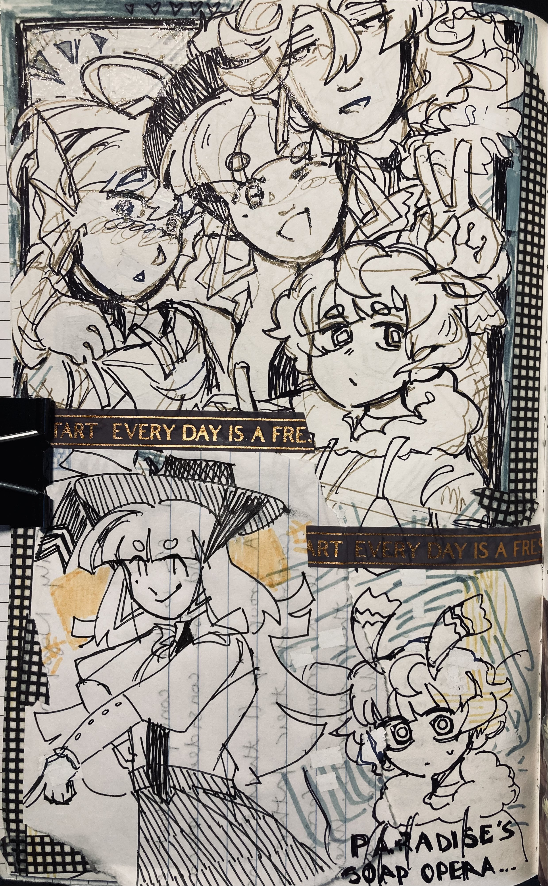

ptc doodles
creation date: may
characters featured: [from left to right] enzo, giomi, otis, amias
omg its the main cast being silly !!! ouugh i love them so sooo much eheuehehe !! i scribbled this one up while bored during the summer. nothing too much to say abt this one tbh, its just cute imo
anyways, the other half of the page spread !

a lot of collaging in this one ! i drew enzo first and then was scared to doodle anything else on the page bc i liked that one drawing too much lol.
i wrote the lyrics to "sabotage everything" by ada rook on this page, even thou the lyrics could not relate less to enzo as a character lol. it was just what i was listening to that as i drew it.
it is, ofc, a banger.

i'd considered showcasing the two pages in seperate webpages but then the 1st page would be so empty cos i dont have jack to say abt it ;o;